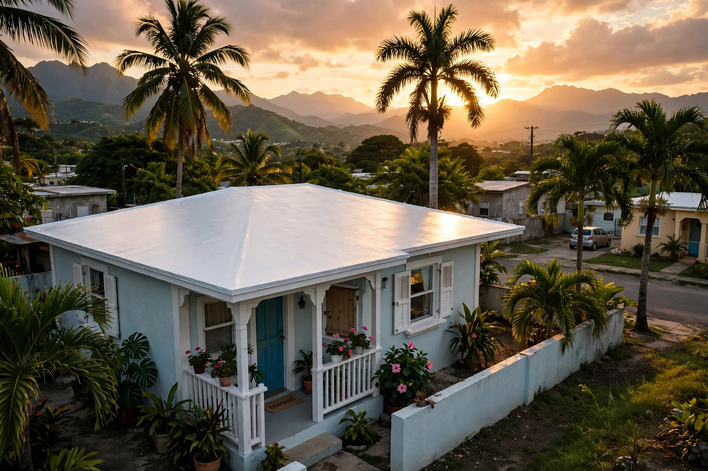
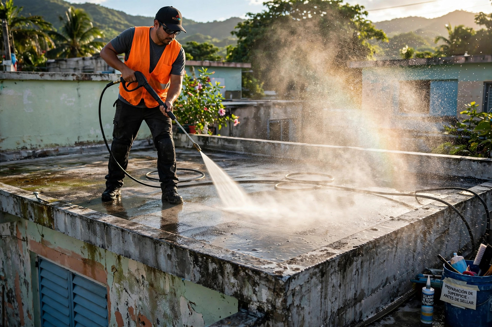
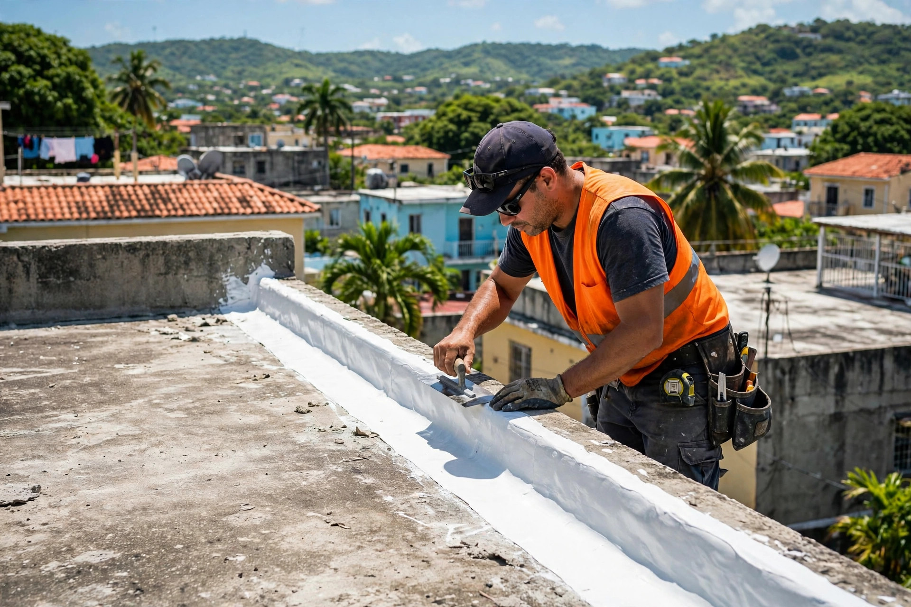

Sellado de techos con oficio de verdad: preparamos, reparamos y sellamos para que la lluvia se quede afuera.


Preparación, reparación y sellado: el proceso completo en cada techo.

Sellado de techos en el norte, el área metropolitana y áreas limítrofes.
Sellado completo, capa por capa.
El problema más común, resuelto de raíz.
Manchas y humedad, corregidas de origen.
Grietas reparadas antes de sellar.
Pueblos del norte, metro y limítrofes.
Sin costo ni compromiso. 939-259-9914.
Un sellador sobre un techo sin preparar dura poco. Por eso lavamos, reparamos grietas y penetraciones, y luego sellamos. Así tu techo aguanta de verdad.
Lo que todo vecino pregunta antes de sellar su techo.
Sí. Visitamos, evaluamos tu techo y te damos el estimado sin costo ni compromiso.
Los pueblos del norte, el área metropolitana y las áreas limítrofes. Escríbenos y confirmamos tu pueblo.
Manchas de humedad en el techo o las paredes, goteras cuando llueve y pintura que se pela son las señales. En la visita gratis lo confirmamos.
Sí. Preparamos la superficie: limpiamos, reparamos grietas y luego aplicamos el sellador.
Una casa promedio se sella en 1 a 3 días, según el tamaño y la preparación que necesite.
Llama o escribe por WhatsApp al 939-259-9914.
Elige el servicio, cuéntanos tu caso y te abrimos WhatsApp con tu mensaje listo para Ruiz Services.
Esta página es una muestra de lo que hacemos. Llevamos tu negocio a internet con oferta de lanzamiento por tiempo limitado.